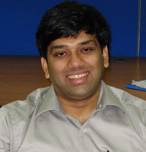

Our Chief Correspondent, Lalita Bhalerao, feeling the pulse of an experienced Consultant in the field of Finance and Technology, Mahesh Padwal.
1. Do tell us something about yourself. Your career history till date (answer hint: qualifications, area of work, technologies, industries, years of experience etc)
Ans: Hi, my career is a bit of interesting feature and so is my journey. I came into banking by chance rather than by choice. When I started working early in my career though not for monetary gains, but to support my maternal uncle who had a good business empire with nobody to assist him. I helped him with not only his operational needs but also with his banking requirements, that is when I was in my graduation phase and banking as a stream interested me. I graduated as a Physics major and later on added a diploma in electronics and an MBA (finance) to my educational repertoire. I started appearing for competitive exams like CAT and Customs & Banking Probationary officer exams.
I started my career with a cooperative bank. The transition though from operations to IT was very fast, since then I have worked with major IT companies like Wipro & TCS and all major CBS platforms i.e Bancs, Finacle & Flexcube.
2. Tell us your understanding of how an IBM’er gets assigned to projects and if you think it is a good system or can do with some new innovative process. (answer hint: RDM’s role, your own role in securing projects, networking with other IBM’ers, knowledge of the different department’s within the FSS sector etc.)
Ans: I joined this particular department when the division was still getting established. I along with many others will agree that it was one of the toughest period not only for us but also for our managers who always kept us motivated.
The main difference I think between IBM and other companies is that each project here is like looking for a new job. One might be good in an area of work but when he is compared internally within IBM across geography’s, his work can easily go unnoticed. This is when one starts competing with the very best in the industry. Also a progressive outlook of the management helps, they understand our pressures and our anxieties and that is what keeps us going.
I also learnt about a different breed of people in IBM, that is the (Resource Development Manager) RDM, the kind of effort which goes into an RDM’s role is really mind blowing, it takes the networking role to newer heights.
Do tell us a bit about the current trends in FSS in US based on your current role and experience.
As everyone knows that Finance Industry is going through a difficult phase in US. All the financial institutions are trying to cut down the costs. Banks are trying to find new ways to help people not to go delinquent. Lots of Data and Analytics activity happening in all the financial institution to find out new ways to reduce losses.
3. Do tell us what you think of IBM’s people management process. (answer hint: people manager’s role, project manager’s role, PAL/ sector leads/ FSS leaders role etc in making up the employee management programs)
Ans: Couple of months back my poster on “Offline functionality” got through to the final FSS technet event in Pune, that is when I learnt that there are so many leaders out there who are trying to secure projects for you so that you have a secure world out here in IBM.
When I tried to sum up the roles mentioned above they are like different faces of the same coin, each one who assumes any of the above roles has a mission to accomplish, the paths are different but ultimately they are leading you towards a common goal which is IBM and its customers.
4. If given an opportunity to work in a different workstream, which might need learning of new technology or domain, how would you approach the transition? (answer hint: Would you prefer to work in the same workstream you are now in or will be happy to work in new area and learn the new things required)
Ans: Domain and technology according to me are upstream and downstream paths of a hill, if you try to follow only one of the paths you will be lost. I think any path you choose you should be very sure you are able to find that path for yourself with ease. That is why we say this is a unipolar world, people today are more focused than ever before.
5. With regards to the question above, do you think all other FSS IBM’ers are of the same opinion or not, what would be your advice to them? (answer hint: do you think your views are shared across the FSS sector or do others have a different view point)
Ans: FSS is a big and vibrant sector, I still have to get a full view of the sector as a whole, but we have some of the best people working there and looking at the resources and talent we have in this sector, we can very well sum it as a Company within a Company in IBM.
6. Do share with us an anecdote or an interesting situation where you achieved success by providing a unique solution or by an innovative approach to a challenge/problem.
Ans: Such situations are many but I can share with you the latest one which I had on my last project.
Here I was standing in front of the new management trainee batch of the customer most of them had passed out of the B schools of the IIM. When I walked this batch through the CBS concepts and the basic banking ideas they were stunned, at the end of the training they were really amazed that banking has evolved so widely over a period of time.
After that day I was there a call away on telling the customer the next logical process as well as the workaround which will help him achieve the desired results in the shortest possible time.
7. Do give us your mantra for success and share with us in FSS your personal message.
Ans: Today I am not as successful as you may perceive for me to answer this question, but I will sure mention my motivation point here in IBM, when I face a project interview I do that with a fresh mindframe, even though you might not get selected on one, there will be ten others ready to grab you depending on our skillsets.
So as long as you are sure you are not wasting precious time doing nothing, the work which will come out of every minute utilized will motivate always egg you on further.
By Lalita Bhalerao
|